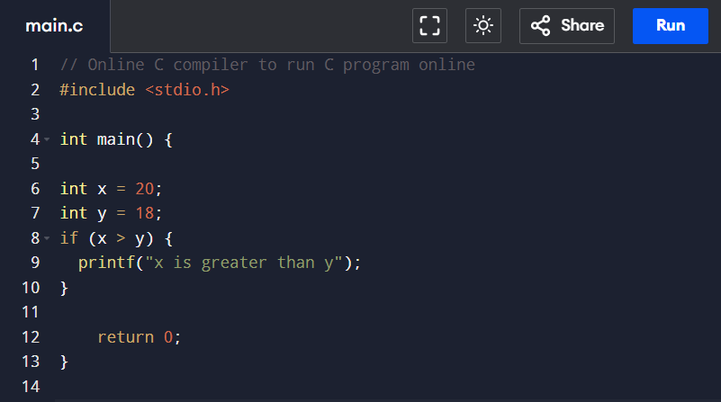
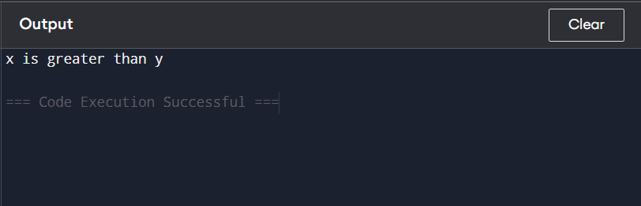
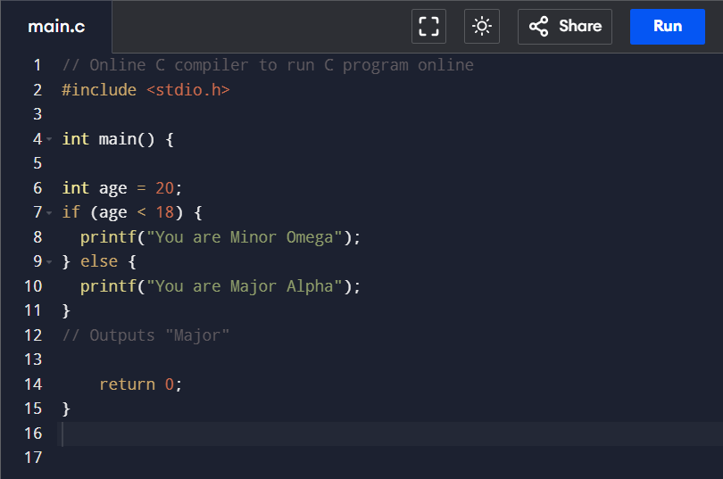
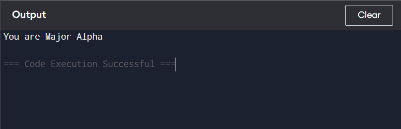
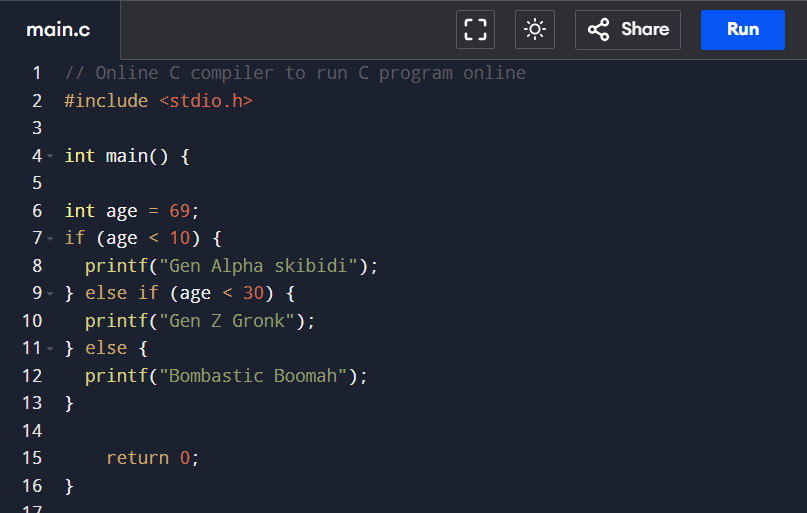
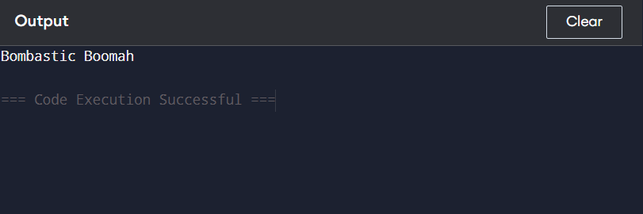

IF STATEMENT
Sample Code:

Output:
Click

Sample Code Explained
In the example above we use two variables, x and y, to test whether x is greater than y using the > operator.
As x is 20, and y is 18, and we know that 20 is greater than 18,
we print to the screen that "x is greater than y".
ELSE STATEMENT
Sample Code:

Output:
Click

Sample Code Explained
In the example above, age (20) is greater than 18, so the condition is false. Because of this, we move on to the else
condition and print to the screen "You are Major Alpha". If the age was less than 18,
the program would print "You are Minor Omega".
ELSE-IF STATEMENT
Sample Code:

Output:
Click

Sample Code Explained
In the example above, age (69) is greater than 10, so the first condition is false.
The next condition, in the else if statement, is also false,
so we move on to the else condition since condition1 and condition2is both false -
and print to the screen "Bombastic Boomah".
However, if the age was 18, our program would print "Gen Z Gronk"
 (4).gif)